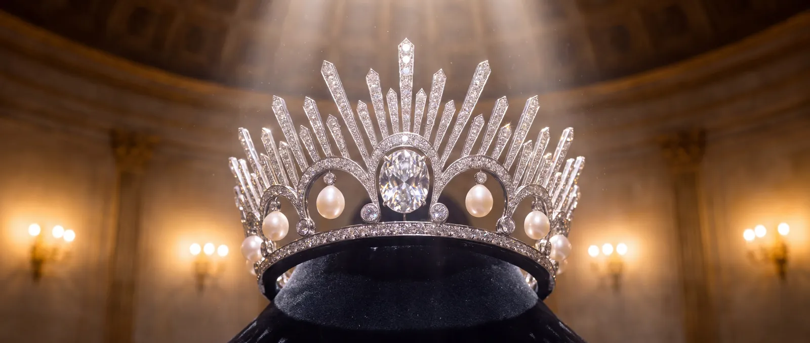

Room VII of VII
Corona
Sunray tiara
About Corona
- 7.41 ct
- oval diamond
- 7
- natural pearls
- 3
- generations to gather them
A sunrise made for a wedding that never took place. It has been worn twice since, both times by daughters of the house.
Why it is rareNatural pearls grow without any human help, and only a tiny fraction of wild oysters ever holds one. Seven that match is a lifetime's search.
Each ray is a line of baguette diamonds set edge to edge, so the tiara reads as light rather than metal from across a room.
The seven pearls are natural, gathered over three generations. They hang free on platinum loops and turn slightly whenever the wearer does.
- Metal
- Platinum
- Centre stone
- Oval diamond, 7.41 carats, E colour
- Pearls
- Seven natural saltwater drops
- Diamonds
- Baguette and brilliant rays
- Room
- VII, the rotunda